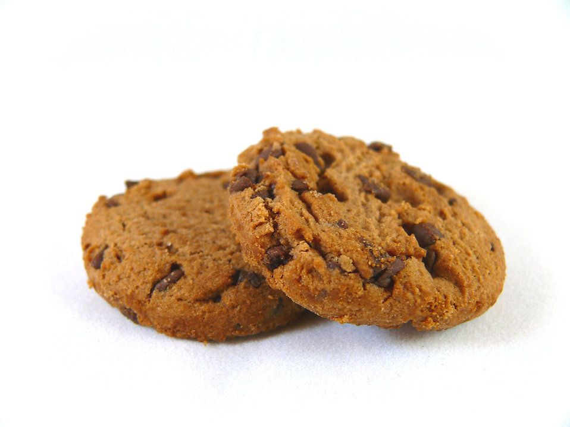
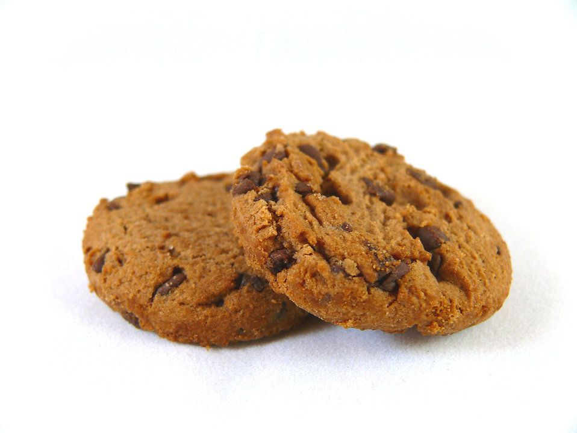

Vi vill vara en kaffeoas där du känner de intensiva dofterna från kaffet när du kliver in genom dörren. Vi är en plats där du för varje kopp kaffe och bakverk ska uppleva en sann njutning och smaksensation. Vi vill ge dig hög kvalitet utan att tumma på rättvisan gentemot kaffe- och kakoodlarna.
Nedan hittar du lite svar på de frågor du kanske har kring chokladprovningen, som vad det är, hur det går till och kostnaden. Vill du sedan boka en tid så går du till vårt bokningsformulär
Vill du veta mer om kakaoträdet, dess historia och vilka sorter som finns så kan du gå till sidan Kakaoträdet
Chokladprovning påminner om vinprovning. Man tittar, doftar och smakar för göra en bedömning av kvalitet, stil och ursprung.Hos oss handlar det om att lära dig mer om choklad och dess historia, olika bönor och dess kvalitet, samt smaka på olika sorters choklad med olika kakohalt.
Vi sitter tillsammans i gruppen med ett fat fyllt med 12 olika chokladbitar samt ett glas vatten. Vi berättar och säger till när det är dags att äta en bit och då vilken du ska ta. Mellan varje chokladbit sköljer vi munnen genom att dricka vatten.
Det är bra att ha ätit en lättare måltid innan du kommer så du verkligen kan njuta och känna smaken av chokladen och inte tänka på att du är hungrig. Men du kommer att vara ganska mätt efter passet då chokladen mättar en del. Undvik att ha på dig starka dofter (parfym, after shave, lotion, shampoo odyl) då det kan försämra smakupplevelsen.
Chokladprovningen sker kvällstid måndag och onsdagar mellan kl. 19 och 21.
Max antal på varje provning är 12 stycken personer.
Pris per person är 525 kr
 

Ⓒ Copyright 2022 | Café Choco-Latte